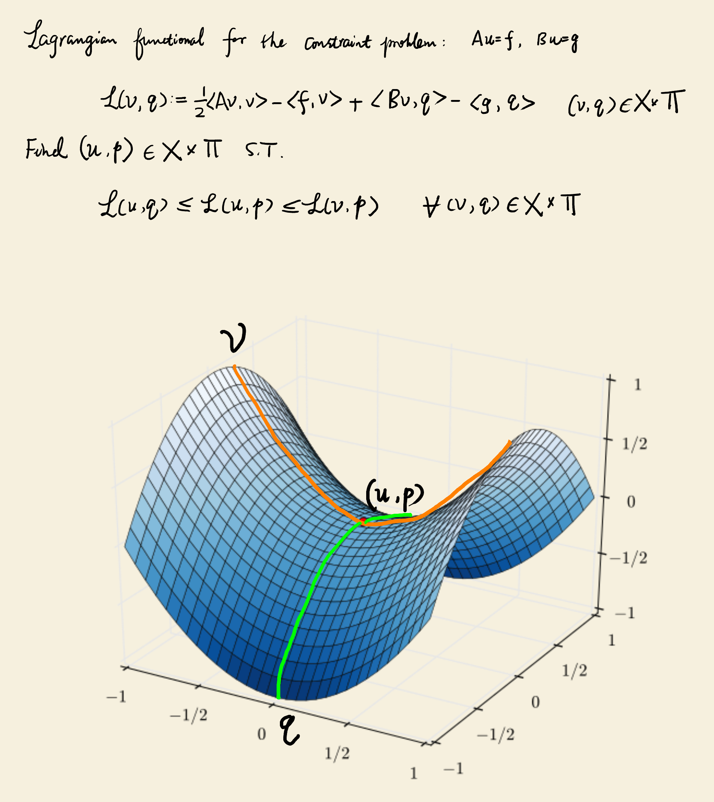

The method of Lagrange multiplier is used to find the extremal or saddle points of an objective function \(f(x^1, \cdots , x^n)\) with a set of \(m\) constraints \begin{equation} \begin{aligned} \varphi _1(x^1,\cdots ,x^n) &= 0 \\ &\vdots \\ \varphi _m(x^1,\cdots ,x^n) &= 0 \end{aligned}. \end{equation} In this article, we will understand this method from a differential geometry point of view.
For the objective function \(f(x^1,\cdots ,x^n) = c\) with a specific output value \(c\), we assume the Jacobian matrix \(Jf\) of the function \(f\) with respect to the coordinate chart \((x)= (x^1,\cdots ,x^n)\) has a full rank. Obviously, \(Jf\) has only one row, which is not a zero vector. Therefore, \(Jf\) is a surjective map. According to the implicit function theorem 1, where \(r=1\), \(f(x^1,\cdots ,x^n)=c\) describes a \((n-1)\)-dimensional submanifold in \(\mathbb {R}^n\).
Theorem 1 (Implicit function) Let \(A\) be an open set in \(\mathbb {R}^{n+r}\) and \(f: A \rightarrow \mathbb {R}^r\) be \(\mathbb {C}^r\), \(f(x) = t \; \forall x \in A\), \(t\) is a constant in \(\mathbb {R}^r\). Then if \(\exists x_0 \in A\) such that \(\rank \left ( \left [ \frac {\partial f}{\partial x} \right ] \bigg \vert _{x=x_0} \right )=r\), then \(\exists \) neighborhood \(B\) of \(x_0\) in \(\mathbb {R}^{n+r}\) such that \(\forall x \in B\), its \(r\) components can be uniquely represented by a \(\mathbb {C}^r\) function \(g\) in terms of the other \(n\) components. If \(\forall x_0 \in A\) satisfies the above condition, \(A\) is a \(n\)-dimensional submanifold in \(\mathbb {R}^{n+r}\). Its codimension is \(r\).
The implicit function theorem is also equivalent to the main submanifold theorem 2.
Theorem 2 (Main submanifold) Let \(F: \mathbb {R}^{n+r} \rightarrow \mathbb {R}^r\) and \(F^{-1}(y_0) = \{x \in \mathbb {R}^{n+r} \vert F(x) = y_0\}\) is not empty. If \(\forall x_0 \in F^{-1}(y_0)\) the Jacobian map \(F_{*}: \mathbb {R}_{x_0}^{n+r} \rightarrow \mathbb {R}_{y_0}^r\) is surjective, then \(F^{-1}(y_0)\) is a \(n\)-dimensional submanifold of \(\mathbb {R}^{n+r}\).
Here \(F^{-1}(y_0)\) is called the level set of \(F\) with respect to \(y_0\). Therefore, the objective function \(f(x^1,\cdots ,x^n)=c\) with a specific output value \(c\) implicitly defines the level set of \(f\) with respect to \(c\). Here we write it as \(M_{\mathrm {o}}^{n-1}\), where the subscript \(\mathrm {o}\) represents “objective function”.
Similarly, for the set of \(m\) constraints, we assume the Jacobian matrix \(J\varphi \) with respect to the chart \((x)\) has a full rank \(m\). And these constraints define an \((n-m)\)-dimensional submanifold, which also implicitly defines the level set of \(\varphi =\left \{ \varphi _1,\cdots ,\varphi _m \right \}\) with respect to \(\mathbf {0}\) in \(\mathbb {R}^m\). Here we write it as \(M_{\mathrm {c}}^{n-m}\), where the subscript \(\mathrm {c}\) represents “constraints”.
For each constraint function \(\varphi _i(x)=0\), it implicitly defines a \((n-1)\)-dimensional submanifold, which is the level set of \(\varphi _i\) with respect to 0 in \(\mathbb {R}\). We write it as \(M_{\mathrm {c}_i}^{n-1}\). Therefore, the level set of \(\varphi \) is the intersection of all level sets for \(\left \{ \varphi _i \right \}_{i=1}^m\): \begin{equation} M_{\mathrm {c}}^{n-m} = \bigcap _{i=1}^m M_{\mathrm {c}_i}^{n-1}. \end{equation}
To find the extremal or saddle points of the objective function \(f\) satisfying the constraints \(\varphi \) is equivalent to find the points at which the level set \(M_{\mathrm {o}}^{n-1}\) of the objective function and the level of set \(M_{\mathrm {c}}^{n-m}\) of the constraints meet tangentially, i.e. they share a common tangent plane or tangent space. If two submanifolds or level sets share a common tangent space, they must also have a common normal space, which is the orthogonal complement of the tangent space. The Lagrange multiplier method is based on the normal space formulation.
The normal space can be derived from the differential 1-form of the implicit map used for describing the level set as below.
For the objective function \(f\), apply the 1-form \(df\) to a tangent vector \(\frac {\mathrm {d} x}{\mathrm {d} t}\), where \(x(t)\) is an arbitrary curve which is contained in \(M_{\mathrm {o}}^{n-1}\) and passes through a point \(p\) in \(M_{\mathrm {o}}^{n-1}\). Because \(M_{\mathrm {o}}^{n-1}\) is a level set of \(f\) with respect to \(0\), \(f(x(t))\) is \(0\) for all \(t\). Therefore, \begin{equation} df \left ( \frac {\diff x}{\diff t} \right ) = \sum _{i=1}^n \frac {\diff x^{i}}{\diff t} \frac {\partial f}{\partial x^i} = \frac {\partial f}{\partial t} = 0. \end{equation} This is equivalent to \begin{equation} \left \langle \nabla f, \frac {\diff x}{\diff t} \right \rangle = 0, \end{equation} i.e. the gradient vector \(\nabla f\) is orthogonal to the tangent vector \(\frac {\diff x}{\diff t}\). Because this tangent vector is arbitrary, \(\nabla f\) is orthogonal to the tangent space \(T_p M_{\mathrm {o}}^{n-1}\) at \(p\) and \(\mathrm {span}\left \{ \nabla f \right \}\) is the normal space \(N_p M_{\mathrm {o}}^{n-1}\), which is the orthogonal complement of \(T_p M_{\mathrm {o}}^{n-1}\). Similarly, for the constraint function \(\varphi _i\), \(\mathrm {span} \left \{ \nabla \varphi _i \right \}\) is the normal space \(N_p M_{\mathrm {c}_i}^{n-1}\), which is the orthogonal complement of \(T_p M_{\mathrm {c}_i}^{n-1}\). Then \(\mathrm {span} \left \{ \nabla \varphi _1,\cdots ,\nabla \varphi _m \right \}\) is the normal space \(N_p M_{\mathrm {c}}^{n-m}\) of \(M_{\mathrm {c}}^{n-m}\). This can be simply verified as below.
Let \(u=\sum _{i=1}^m \lambda _i \nabla \varphi _i\) be any vector in this normal space. For any vector \(v\) in the tangent space \(T_p M_{\mathrm {c}}^{n-m}\) of \(M_{\mathrm {c}}^{n-m}\), because \(v\) is orthogonal to any \(\nabla \varphi _i\), we have \(\langle u,v \rangle = 0\), i.e. \(u\) is orthogonal to \(v\). Therefore, \(\mathrm {span} \left \{ \nabla \varphi _1,\cdots ,\nabla \varphi _m \right \}\) is a normal space.
Now, let’s check the new objective function after applying the method of Lagrange multiplier, which is \begin{equation} L(x^1,\cdots ,x^n,\lambda _1,\cdots ,\lambda _m) = f(x^1,\cdots ,x^n) + \sum _{i=1}^m \lambda _i \varphi _i(x^1,\cdots ,x^n). \end{equation} To find critical points of \(L\), we need to enforce two types of conditions \begin{equation} \frac {\partial L}{\partial x^{i}} = 0, \quad i=1,\cdots ,n, \end{equation} and \begin{equation} \frac {\partial L}{\partial \lambda _j} = 0, \quad j=1,\cdots ,m. \end{equation} From the first type, we have \begin{equation} \frac {\partial f}{\partial x^{i}} + \sum _{k=1}^m \lambda _k \frac {\partial \varphi _{k}}{\partial x^{i}} = 0, \quad i=1,\cdots ,n. \end{equation} This is equivalent to \begin{equation} df + \sum _{k=1}^m \lambda _k d\varphi _k = 0. \end{equation} Applying the inverse of the metric tensor \(g_{ij}\) to this equation, i.e. using the sharp operator \(\sharp \) to transform the 1-forms \(df\) and \(d\varphi _k\) to tangent vectors, we obtain the equation for gradient vectors: \begin{equation} \nabla f + \sum _{k=1}^m \lambda _k \nabla \varphi _k = 0, \end{equation} which means the two level sets \(M_{\mathrm {o}}^{n-1}\) and \(M_{\mathrm {c}}^{n-m}\) have a same normal space.
The second type of conditions \(\frac {\partial L}{\partial \lambda _{j}} = 0\) is simply enforcing the original constraint \(\varphi _j = 0\).
In summary, the first condition in the Lagrange multiplier method is the normal space condition, while the second is the constraint condition.
Let \(X\) be a Hilbert space and \(X'\) be its dual space. \(\left \langle \cdot ,\cdot \right \rangle _X\) is the inner product in \(X\) and \(\left \langle \cdot ,\cdot \right \rangle \) is the duality pairing, which applies a linear functional \(f\in X'\) to an element \(u\in X\), i.e. \(\left \langle f,u \right \rangle =\left \langle u,f \right \rangle =f(u)\). \(A: X \rightarrow X'\) is a bounded linear operator satisfying \begin{equation} \norm {Av}_{X'}\leq c_2^A\norm {v}_X \quad \forall v \in X. \end{equation} We also assume \(A\) is self-adjoint in the sense of normed space (see Section ??).
For the operator equation \(Au=f\), where \(f\in X'\), we already know that it is equivalent to the variational equation \(\langle Au,v \rangle = \langle f,v \rangle \) for all \(v\in X\) due to the boundedness of \(A\). If we further assume \(A\) is positive semi-definite, i.e. \begin{equation} \langle Av,v \rangle \geq 0 \quad \forall v\in X, \end{equation} this variational equation is equivalent to a minimization of a functional without constraint: \begin{equation} u = \underset {v\in X}{\argmin }\; F(v) = \underset {v\in X}{\argmin }\; \frac {1}{2} \langle Av,v \rangle - \langle f,v \rangle . \end{equation} This can be proved by perturbing \(u\) with \(tw\), where \(w\in X\) and \(t\) is a small scalar value. By letting \(\frac {\diff F(u+tw)}{\diff t} = 0\) at \(t=0\), we can obtain the variational formulation \(\langle Au,w \rangle = \langle f,w \rangle \) and also show that \(F(u)\) is a minimum value.
Proof \begin{equation} \begin{aligned} F(u+tw) &= \frac {1}{2} \langle A(u+tw),u+tw \rangle - \langle f,u+tw \rangle \\ &= \frac {1}{2} \langle Au,u \rangle - \langle f,u \rangle + \frac {1}{2} \langle Au,tw \rangle + \frac {1}{2} \langle A(tw), u \rangle + \\ &\quad \frac {1}{2} \langle A(tw),tw \rangle - \langle f,tw \rangle \end{aligned} \end{equation}
Because \(A\) is self-adjoint, the fourth term above \(\langle A(tw),u \rangle = \langle tw,Au \rangle \) and we have \begin{equation} \begin{aligned} F(u+tw) &= F(u) + t\langle Au,w \rangle + \frac {1}{2} t^2 \langle Aw,w \rangle - t\langle f,w \rangle \\ &= F(u) + t \left ( \langle Au,w \rangle - \langle f,w \rangle \right ) + \frac {1}{2} t^2 \langle Aw,w \rangle \end{aligned}. \end{equation} Let the derivative of \(F(u+tw)\) at \(t=0\) be 0: \begin{equation} \frac {\diff F(u+tw)}{\diff t} \Big \vert _{t=0} = \langle Au,w \rangle - \langle f,w \rangle = 0, \end{equation} which is the variational equation.
We can also directly compute the variation \(\delta F(v)\) of the functional \(F(v)\) to derive the variational equation. The variation \(\delta F(v)\) is the linear part of the changes in \(F(v)\) when there is a perturbation \(\delta v\) added to \(v\), i.e. \begin{equation} F(v+\delta v) - F(v) = \delta F(v) \delta v + O(\delta v^2) + \cdots , \end{equation} where \(O(\delta v^2)\) and more subsequent terms are the high order changes with respect to \(\delta v\). The variation operator \(\delta \) commutes with differential and integral operators. It also satisfies the chain rule for the normal differential operator. Then we have \begin{equation} \begin{aligned} \delta F(v) &= \frac {1}{2} \langle A\delta v,v \rangle + \frac {1}{2} \langle Av,\delta v \rangle - \langle f,\delta v \rangle \\ &= \langle Av,\delta v \rangle - \langle f,\delta v \rangle \end{aligned}. \end{equation} Let \(\delta F(v) = 0\), we obtain the variational formulation \(\langle Av, \delta v \rangle = \langle f,\delta v \rangle \). \(\delta v\) is arbitrary and can be replaced with any \(w\in X\).
Next, we will show that \(F(v)\) achieves the minimum value when \(v\) is the solution \(u\) of the variational equation. In the above, we already have \begin{equation} F(u+tw) = F(u) + t \left ( \langle Au,w \rangle - \langle f,w \rangle \right ) + \frac {1}{2} t^2 \langle Aw,w \rangle . \end{equation} Because \(u\) is the solution of the variational equation, the second term \(t \left ( \langle Au,w \rangle - \langle f,w \rangle \right )\) is zero. Meanwhile, considering the assumption that \(A\) is positive semi-definite, we have \(\frac {1}{2} t^2 \langle Aw,w \rangle \geq 0\) and \(F(u) \leq F(u+tw)\), which means \(u\) is a local minima of the functional \(F(v)\).
If there is a constraint in the form of an operator equation \(Bu=g\), where \(B: X \rightarrow \Pi '\) is a bounded linear operator and \(g\in \Pi '\), \(\Pi \) is a Banach space and \(\Pi '\) is its dual space, using the Lagrange multiplier method, we can obtain a new functional \begin{equation} \begin{aligned} L(v,p) &:= \frac {1}{2} \langle Av,v \rangle - \langle f,v \rangle + \langle Bv-g,p \rangle \\ &= \frac {1}{2} \langle Av,v \rangle - \langle f,v \rangle + \langle Bv,p \rangle - \langle g,p \rangle \end{aligned}, \end{equation} where \(p\in \Pi \) is the Lagrange multiplier. Note that a Lagrange multiplier introduced into a PDE for the operator equation constraint is not a scalar value anymore, but a function in the test function space. The constraint \(Bv=g\) is also weakly enforced, i.e. \(Bv-g\) is multiplied with \(p\) and then integrated on the whole domain.
In this new functional \(L(v,p)\), there is only one variable and one Lagrange multiplier, both of which are functions. To find the critical points of \(L(v,p)\), we first perturb \(v\) with \(tw\) where \(w\in X\), then \begin{equation} \begin{aligned} L(v+tw,p) &= \frac {1}{2} \langle Av,v \rangle - \langle f,v \rangle + t \left ( \langle Av,w \rangle - \langle f,w \rangle \right ) + \\ &\quad \frac {1}{2} t^2\langle Aw,w \rangle + \langle Bv,p \rangle + \langle B(tw),p \rangle - \langle g,p \rangle \end{aligned}. \end{equation} Let \begin{equation} \frac {\diff L(v+tw,p)}{\diff t} \Big \vert _{t=0} = 0, \end{equation} we have \begin{equation} \langle Av,w \rangle + \langle Bw,p \rangle = \langle f,w \rangle . \end{equation}
Then we perturb \(p\) with \(tq\) where \(q\in \Pi \), then \begin{equation} L(v,p+tq) = \frac {1}{2} \langle Av,v \rangle - \langle f,v \rangle + \langle Bv,p \rangle + \langle Bv,tq \rangle - \langle g,p \rangle - \langle g,tq \rangle . \end{equation} Let \begin{equation} \frac {\diff L(v,p+tq)}{\diff t} \Big \vert _{t=0} = 0, \end{equation} we have \begin{equation} \langle Bv,q \rangle = \langle g,q \rangle . \end{equation} Combine the above two equations and replace \(v\) with \(u\), \(w\) with \(v\) symbolically, the familiar mixed variational formulation can be obtained: \begin{equation} \begin{aligned} \langle Au,v \rangle + \langle Bv,p \rangle &= \langle f,v \rangle \\ \langle Bu,q \rangle &= \langle g,q \rangle \end{aligned}, \end{equation} where \((u,p)\in X\times \Pi \) is the solution to be found and \((v,q)\in X\times \Pi \) is the test function. It can be proved that the critical point of the functional \(L(v,p)\) found by the Lagrange multiplier method is neither a maximum or minimum, but a saddle point (see Figure 2.1). Hence, the mixed variational formulation is also a saddle point problem. When it is discretized into a block matrix system, the matrix is not symmetric positive definite (SPD) or Hermitian positive definite (HPD) anymore. Therefore, it should be solved with an iterative solver like BiCGStab, but not the conjugate gradient (CG) method.

The essence of the general Lagrange multiplier method is looking for the common tangent or normal space between two high dimensional submanifolds or level sets associated with the objective function and one or multiple constraint functions. This method can be used to find critical points of the objective function. Whether they are minimum, maximum or saddle points needs further inspection or proof.
The critical points can be found by equating the partial derivatives of the modified objective function to zeros. The partial derivatives with respect to independent variables enforce the common normal space condition, while the partial derivatives with respect to Lagrange multipliers enforce the constraints.
In a PDE, a Lagrange multiplier introduced for a constraint in the form of an operator equation is a function instead of a scalar value. When it is appended to the new objective function without constraints, it should be multiplied with the constraint operator equation (all terms moving to the left hand side, i.e. \(Bu-g=0\)) and then integrated on the whole domain, e.g. \(\langle Bu-g,p \rangle \). Therefore, the constraint is weakly enforced and the Lagrange multiplier can be considered as a test function.
However, it is also possible that the constraint is only a scalar valued equation. For example, in the boundary integral equation (BIE) for the Laplace problem with the Neumann boundary condition, because the kernel of the hypersingular operator is nontrivial, the solution should be sought in a subspace such as \(H_{\ast }^{1/2}(\Gamma )\) instead of the whole space \(H^{1/2}(\Gamma )\). Then a scalar valued constraint \(\langle \gamma _0^{\mathrm {int}}u, w_{\mathrm {eq}} \rangle _{\Gamma } = 0\) is needed to confine the solution within this subspace, where \(w_{\mathrm {eq}}\) is the natural density. The Lagrange multiplier for introducing this constraint into the Lagrange functinal is a scalar value as usual. The derived saddle point problem is \begin{equation} \begin{aligned} \langle D \gamma _0^{\mathrm {int}}u,v \rangle _{\Gamma } + \lambda \langle v, w_{\mathrm {eq}} \rangle _{\Gamma } &= \langle (\frac {1}{2} I - K')g, v \rangle _{\Gamma } \\ \langle \gamma _0^{\mathrm {int}}u,w_{\mathrm {eq}} \rangle _{\Gamma } &= 0 \end{aligned}. \end{equation}
Due to the boundedness, self-adjointness and positive semi-definiteness of the partial differential operator \(A\) as well as the boundedness of the constraint operator \(B\), the critical point of the functional \(L(v,p)\) is a saddle point.